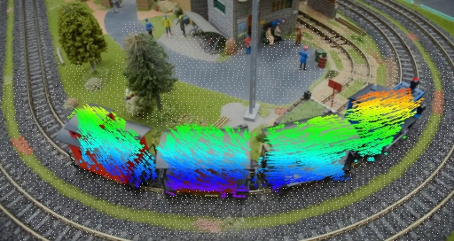

Separate inference from result exploration
GPU inference runs locally, with per-frame outputs and execution conditions saved. The browser compares inputs and outputs at the same timestamp without rerunning the model.
AI · Computer vision experiments
Integrated public vision models with evaluation and visualization across 13 technology pages. The lab presents recorded results and errors in object relations, motion comparison, simulated control, tracking, and pose estimation, while distinguishing executed stages from stages awaiting model access or required files.

Recorded results · stage progress · model preparation status
One generated clip · baseline and revised runs
Internal repeats of one reference motion and four-joint model
01 / EXPERIMENT MAP
Eight technology pages extend the five existing experiments. Thirteen is the page count, not a claim that 13 complete model pipelines ran successfully. Result pages compare inputs with raw predictions; preparation pages document completed stages and required model access or files. Existing cases retain the detailed relation and motion-control designs.
| Experiment | What it investigates | Run scope |
|---|---|---|
| RelateAnything | Relation scores and errors before and after object association | 481 generated-video frames |
| MotionCheck V1 | Motion differences using 2D joints and temporal alignment | Reference and performed clips, including failures |
| MotionCheck V2 | Motion-stage decisions and torque control of simulated arms | 400 internal simulation evaluations |
| TraceAnything | Trajectories over footage and in a 3D point cloud | 80 train and 90 dance frames, plus input variants |
| DeepLabCut | 2D human and mouse keypoints and human 3D pose estimates | 90 dance frames with 17 joints; 120 mouse frames with 27 points |
| TAPNext++ | 2D trajectories of surface points in video | Inference on 90 dance and 80 train frames |
| Sapiens2 | 308 keypoints and body/clothing segmentation | 90 dance frames, pose and segmentation run separately |
| HTD-Refine | PVA-Net joint position, velocity, and acceleration estimates | PVA-Net on 90 frames · final mesh refinement pending |
| ReViV | Body, hands, camera, gaze, and relative-depth estimates from egocentric video | Official 2-second sample · 256 model, 16 input frames → 60 motion frames |
| 4DAnyone | Novel-view generation from a human video | Public weights prepared · SMPLX_NEUTRAL.npz required |
| SAM 3.1 | Mask and ID tracking of text-prompted targets | Code and environment prepared · model access approval pending |
| Fast SAM 3D Body | Accelerated per-image human mesh estimation | Model API imports verified · checkpoint access approval pending |
| CARI4D | 3D human-object motion and interaction reconstruction | Code and environment prepared · SMPL-H model files required |
02 / MY CONTRIBUTION
I implemented object association and temporal processing, joint comparison and stage decisions, and MuJoCo torque control. For TraceAnything inference, I adapted execution scheduling and attention compatibility for Windows and a 24 GB GPU, then checked exported coordinates against raw predictions.
Evaluation separates missing observations from relation errors, pose differences from timing, and control error from task completion. For DeepLabCut, I compared default and bounding-box selection settings and distinguished prediction confidence from accuracy. For additional models, I recorded executed stages, exported data, and remaining requirements, connecting results and preparation status through 13 technology pages on one Vercel site.
03 / 2D POINT TRACKING
Using the official public checkpoint, I ran 2D point tracking on 90 dance frames and 80 train frames. Trajectories over the source footage and per-frame predictions show where points move and where they drift from the surface.
These outputs are point trajectories in image pixel coordinates. They do not estimate named body joints or world-space 3D motion; occlusion, fast rotation, and accuracy against ground truth require separate evaluation.
04 / POSE AND SEGMENTATION
I ran Sapiens2-0.4B pose and segmentation separately on the same 90 dance frames. The viewer compares 308 keypoints and 29 body/clothing segmentation classes, including background, with the source footage. Model weights stay local; videos, raw predictions, and execution settings are exported.
Pose selects the largest detected person box in each frame; segmentation labels each frame independently. Neither guarantees persistent identity or temporal mask consistency. Joint scores are raw heatmap values that can exceed 1, not probabilities or accuracy. I verified alignment of all 90 exported frames and their raw data.
05 / PARTIAL PIPELINE
I executed the PVA-Net stage of HTD-Refine to estimate joint positions, velocities, and accelerations across 90 frames of the official exercise sample. The page exposes this stage’s actual outputs and inputs and identifies how far the full pipeline has run.
Final human mesh refinement has not run. It requires the separate SMPLX_NEUTRAL.npz model file; PVA-Net outputs are not presented as completed 3D motion refinement or mesh reconstruction.
06 / EGOCENTRIC MOTION
I ran the 256×256 reviv_500b model on an official two-second RGB sample to estimate body motion, both hands, camera motion, gaze, and relative depth. From the original 32 frames at 16 fps, I selected 16 frames at 8 fps as input. Body, hand, camera, and gaze outputs contain 60 frames at 30 fps; relative depth contains 16 frames at 8 fps. The viewer repeats source and depth frames to align their timelines.
The body and camera 3D view retains the predicted coordinate system. Ground-truth camera intrinsics K from the official sample are used only to project the predicted hands onto the image, not as model inputs. I preserved the substantial hand-position mismatch, especially in the first frame, without manually correcting coordinates.
This experiment verifies execution and output formats on one official sample; joint and gaze accuracy were not evaluated against ground truth. The grayscale relative-depth output has not been validated as distance in meters. The 512×512 metric_depth model, which requires Cosmos 1.0 access agreement, was not run.
07 / KEYPOINT ESTIMATION
SuperAnimalHumanBody with RTMPose-x estimated 17 joints across 90 dance frames; SuperAnimalTopViewMouse with HRNet-w32 estimated 27 keypoints across 120 mouse frames. The viewer compares source and prediction videos at matching frames and provides execution settings, confidence values, and prediction data.
The default run switched people in the dance footage. I added a comparison that selects the largest detected bounding box in each frame. This rule does not track identity and does not guarantee that the same person stays selected or that joint locations are correct.
FMPose3D 0.0.10, through the official integration, estimated 17 H36M 3D joints for the same 90 dance frames. It uses a separate YOLOv3 and HRNet-w48 pipeline; the viewer compares default and largest-box predictions with rotating 3D views. Coordinates are pelvis-relative, and joint-placement errors remain near frame 60 even with largest-box selection.
08 / 3D TRACKING
TraceAnything processed 80 DAVIS train frames and 90 dance frames. The dance viewer compares all 90 frames, 30 frames sampled every third frame, and a fixed person crop of those 30 frames, with projected overlays and a rotatable 3D view.
DAVIS masks select displayed tracks, define the fixed crop, and weight camera fitting. They do not correct predicted 3D coordinates. Points still drift from body surfaces during fast rotation and occlusion; tracking quality remains under review.
ENGINEERING DECISIONS
GPU inference runs locally, with per-frame outputs and execution conditions saved. The browser compares inputs and outputs at the same timestamp without rerunning the model.
Mask selection and clearer visualization are not presented as accuracy improvements. Raw outputs and processing conditions remain available for inspection.
SCOPE & LIMITS
South Korea · Korean / English